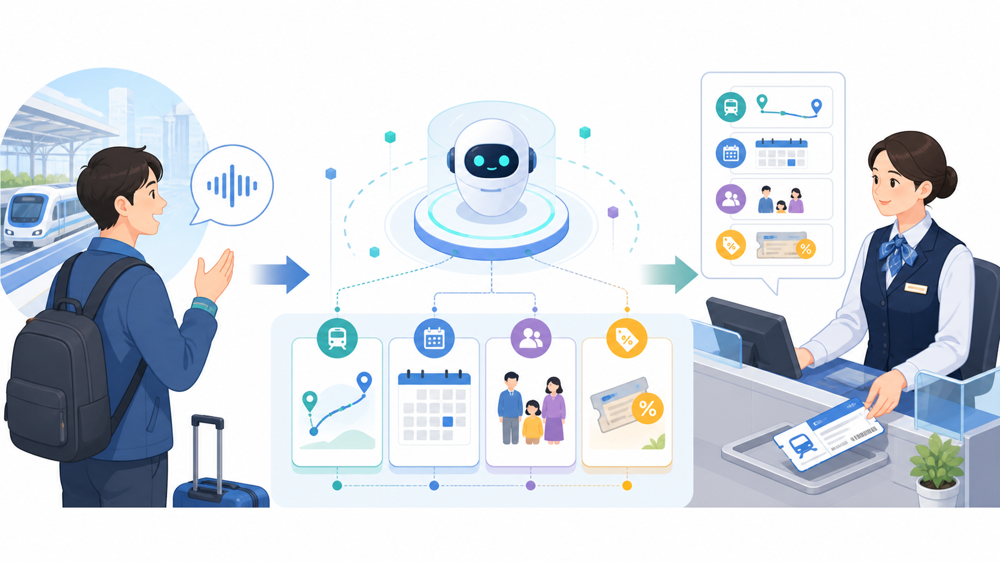

分かりやすく一言で言うと
JR東日本は2026年6月9日、立川駅と大宮駅で「みどりの窓口AI対応サービス（仮称）」の実証実験を同年7月に実施すると発表しました。発表された仕組みでは、生成AIが利用者の希望を聞いて整理し、人の駅係員が内容を確認して発券します。AIが切符を自動発券する実験ではありません。
公式発表で示された実証計画
JR東日本とNECが公表した資料では、利用者が生成AIと音声で対話し、希望する経路、利用日、人数、割引などの条件を整理してから、みどりの窓口の係員へ引き継ぐ計画が示されていました。
参照している二つの一次資料は、どちらも実証実験の実施前に公表された発表資料です。そのため、この記事では発表された仕組みと検証項目を紹介し、実施結果、利用者評価、導入効果が確定したとは記述しません。
AIから人へ、相談と発券の流れ
発表された計画では、利用者は専用ブースまたは専用端末で生成AIと音声で対話します。AIは会話から必要な条件を整理し、その情報を人の係員へ送ります。係員は引き継がれた内容を確認し、案内と発券を行う役割です。

- 利用者がAIへ旅行の希望を話す
- AIが経路、利用日、人数、割引条件などを整理する
- 整理した情報を人の係員へ引き継ぐ
- 係員が内容を確認し、必要な案内と発券を行う
相談の入口をAIが支援すれば、利用者は何から説明すればよいか迷いにくくなり、係員も整理された情報から確認を始められる可能性があります。ただし、実際にどの程度役立ったかは、実施結果を示す公式資料で確認する必要があります。
駅だから確認する3つのポイント
1. 騒音の中でも正しく聞き取れるか
駅には列車の走行音、構内放送、人の話し声があります。静かな室内で使える音声認識でも、駅で安定して働くとは限りません。発表資料では、駅の環境における音声認識の精度やシステムの安定性が検証項目として示されています。
2. 複雑な条件を取りこぼさないか
切符の相談では、行き先だけでなく、日付、時間帯、人数、座席、乗り換え、割引など複数の条件が重なります。自然な会話から必要事項を見つけ、不足があれば確認できるかが大切です。
3. 利用者が安心して使えるか
技術的に動くだけでは十分ではありません。質問が分かりやすいか、会話に時間がかかりすぎないか、間違いに気づけるか。使いやすさや利用体験も検証対象として挙げられています。
「人を減らすAI」ではなく「人へつなぐAI」
この発表で注目したいのは、AIと人の仕事を切り離さず、情報を引き継ぐ設計です。AIは、同じ項目を順番に確認し、会話を要点にまとめる支援を行います。一方、発券前の最終確認、例外的な条件の判断、利用者の不安に応じた説明は人の係員が担う想定です。
少なくとも発表された実証計画は、みどりの窓口をAIへ丸ごと置き換えるものではありません。「AIが整理し、人が確認して発券する」という役割分担を試す内容です。
多言語対応や発券までの一体化は将来構想
NECの発表では、将来的な構想として、多言語への対応や、利用者の希望の聞き取りから発券までを一体化する方向が示されています。しかし、これらは今回の実証計画ですでに実装された機能として説明されているわけではありません。
現在の計画と将来像を分けて読むことで、「AIがすでに自動発券している」「多言語で本格運用が始まった」といった誤解を避けられます。
ろぶーの結論
JR東日本が発表した「みどりの窓口AI対応サービス（仮称）」の実証計画は、AIへ窓口業務をすべて任せるものではありません。生成AIが利用者の希望を整理し、人の係員へつなぎ、係員が確認して発券する仕組みです。
駅の騒音下での認識精度、複雑な条件の扱い、利用者の安心感など、確認すべき点は少なくありません。それでも「AIか人か」ではなく「AIが整理し、人が判断する」という考え方は、これからの駅サービスを考えるうえで興味深い一歩です。今後、実施結果を示す公式資料が公表された場合は、その内容を確認して更新したいと思います。
公式出典
- 東日本旅客鉄道株式会社「新たな技術イノベーションにより、駅におけるお客さまサービスを高度化します ～『みどりの窓口』でのAI活用や近距離乗車券のQR化を推進します～」（2026年6月9日、PDF）
- 日本電気株式会社「NEC、JR東日本と立川駅で『みどりの窓口AI対応サービス（仮称）』の実現に向けた実証実験を実施」（2026年6月9日）
記事内容は2026年8月30日時点で上記の公式発表資料を確認して構成しています。実証の実施結果や導入効果は、結果を示す公式資料を確認できるまで断定しません。